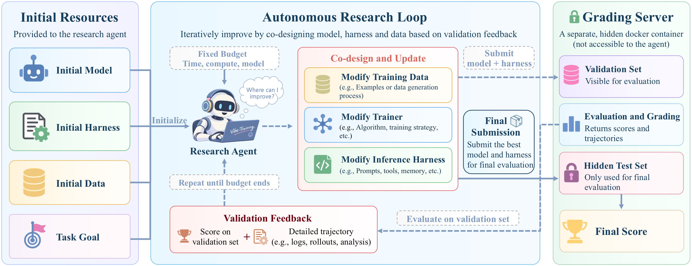
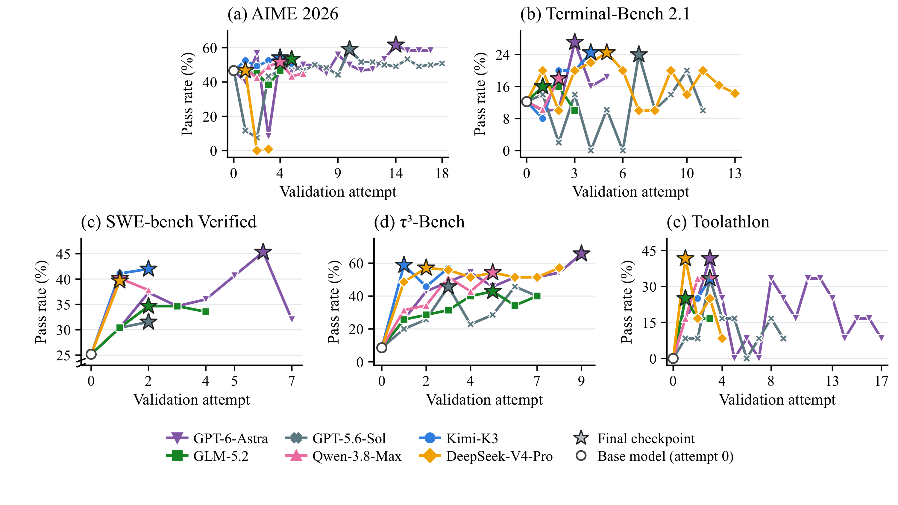
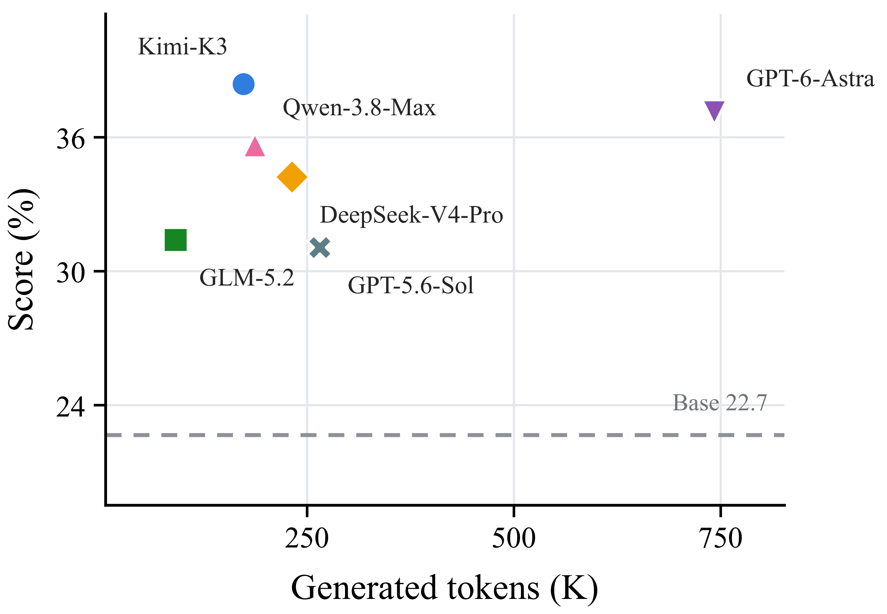
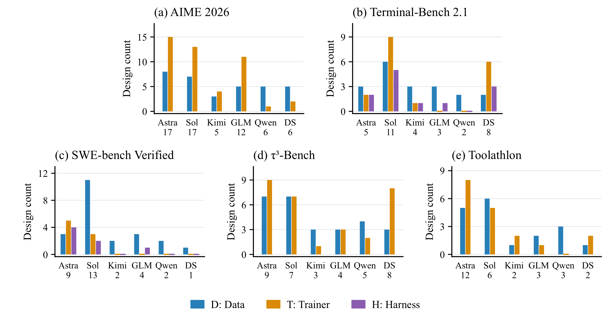

递归自我改进要求研究智能体把一个智能体系统作为整体来改进。这意味着它要判断在哪里动手——训练数据、训练器还是推理框架——并在系统不断演化的过程中协调这几处的修改。我们把这种能力称为跨组件协同设计，VibeTraining-Bench 正是为衡量它而构建的。
- 01前沿研究智能体能大幅改进目标系统。五任务平均分从 22.7% 最高提升到 38.3%；在 SWE-bench Verified 上，GPT-6-Astra 将得分从 32.9% 提升到 53.7%，接近人工开发的 Instruct 模型（55.4%）。
- 02没有哪一种配置在所有任务上领先。五个任务产生了四个不同的第一名；投入更多研究时间或 token 也换不来更高的分数。
- 03对各组件的探索并不均衡。Kimi-K3 在 SWE 任务上虽被允许修改推理框架，却从未动过它——而另一次只改推理框架的运行就把初始系统从 32.9% 提升到了 38.0%。
- 04验证集上的提升并不能可靠地迁移。五个任务中，只有一个任务的验证集领先者同时也是隐藏测试集领先者。
核心结果 · SWE-bench Verified
32.9%→53.7%
GPT-6-Astra 在以 Qwen3.5-9B-Base 为基座的目标系统上，协调修改训练数据、训练器与推理框架，性能达到与人工开发的 Qwen3.5-9B-Instruct 相当的水平。
协同设计结果 · Terminal-Bench 2.1
8.9%→22.4%
Kimi-K3 协同设计训练数据、训练器与推理框架。在只改数据和训练器的运行上加入推理框架修改后，隐藏测试得分从 13.5% 提升到 22.4%，超过人工开发的 Instruct 模型。
01 · 研究动机
改进单个组件，不等于改进整个系统
一个目标智能体系统由模型和推理框架（harness）组成。训练数据和训练器决定了模型；推理框架则控制模型在推理时如何与环境交互。这些部分彼此耦合：训练数据或训练器的变化，往往需要同步调整推理框架，更新后的模型才能真正表现得更好。
研究智能体不仅要知道如何调好某个组件，更要知道下一步该去动哪一个组件。
范围 I
单组件优化
只优化一个固定的对象。
- D Curation-Bench、RSIBench-Data
- T AI4AI-Bench
- H HarnessOpt-Bench、Evo-Bench
范围 II
训练侧流水线
数据构建 + 后训练，推理框架固定。
- DT PostTrainBench
- DT Agent² RL-Bench
范围 III
跨组件协同设计
训练侧与推理侧同时交由智能体控制，并采用隔离评测。
- DTH VibeTraining-Bench
RSI 基准的评测协议对比
✓ 强制保证 △ 部分支持 / 文档不充分 ✗ 不支持 – 不适用
表 1. 轨迹反馈要求提供任务级的执行轨迹或诊断信息；迭代修订要求支持多轮"提出–评测–修订"循环。联合设计要求在同一任务中协调修改数据、训练器与推理框架。开发/测试隔离保证开发期间无法访问最终测试集；训练/评测隔离则将训练、推理服务与评测服务分开。
02 · 基准设计
带隔离评测器的自主研究循环
每个任务提供一个基座模型 M0、初始训练数据与训练器、推理框架 H0，以及固定的资源预算 B。研究智能体在允许的组件上反复迭代，通过受控接口申请验证，最后提交一个系统，在隐藏测试集上只评测一次。

- 1
初始化
先评测初始目标智能体系统 P0 = (M0, H0)，智能体可以看到它的验证分数和执行轨迹。
- 2
协同设计
在第 t 轮，于可编辑空间内修改数据 Dt、训练器 Tt 或推理框架 Ht。Mt 可以是新训练、合并得到或直接复用的模型。
- 3
验证
隔离评测器评测 Pt，返回反馈 ft：一个汇总分数和每道题的执行轨迹。
↶ 根据验证反馈再次迭代 - 4
选择
预算耗尽时，智能体只依据研究期间可获得的信息，选出一个候选系统 P⋆。
- 5
隐藏测试
P⋆ 在与验证集不相交的隐藏题目上评测一次，不返回任何反馈。
三项防奖励作弊措施
数据隔离
在整个研究阶段，隐藏测试题以及任何源自测试集的反馈都不可访问。验证题和评测器返回的轨迹可用于诊断，但绝不能用作训练数据。
容器隔离
研究工作区与评分服务运行在不同的容器中，智能体无法修改评测代码或评测数据。
网络限制
研究沙箱禁止访问外部网络，智能体在运行期间无法获取外部数据。
任务集
五个目标环境，交互范式各不相同，但共用同一套改进框架。所有任务都开放 D 和 T；在推理框架 H 主导长程执行的任务中，它也可以修改。
所有配置都从 Qwen3.5-9B-Base 和相同的初始数据池出发。验证与隐藏测试使用相同的解码设置、轮数与 token 上限；超时和执行失败记为零分。验证请求次数不设上限——评测所用的时间直接计入预算。
03 · 实验结果
排行榜
各研究智能体最终选定的目标智能体系统在隐藏测试集上的表现（%）。每个研究智能体由一个研究者 LLM 与一个编程框架组成：GPT 系列模型运行在 Codex（xhigh 推理强度）中，其余模型运行在 Claude Code 中。时长为五个任务累计的研究耗时。
分任务视图
04 · 主要发现
横向解读实验结果
大幅提升是可能的，但并非每次运行都能带来改进。领先者因任务而异，而研究时间和生成的 token 数量都无法解释最终结果。
| 观察 | 例子 | 证据 |
|---|---|---|
| 可以取得大幅提升。 | Kimi-K3 · τ³-Bench | 20.3 → 52.1，是相对初始系统最大的提升。 |
| 改进并没有保证。 | GPT-5.6-Sol · Terminal-Bench 2.1 | 仍为 8.9，与初始系统完全相同。 |
| 没有配置能在所有任务上领先。 | 各任务领先者 | Astra（SWE）、Kimi（Terminal、τ³）、DeepSeek（Toolathlon）、GLM（AIME）。 |
| 编程框架不能说明一切。 | 四个 Claude Code 智能体 | 彼此差距从 Toolathlon 上的 5.7 分到 τ³-Bench 上的 15.9 分不等。 |
| 时间更多 ≠ 结果更好。 | Qwen-3.8-Max vs. Kimi-K3 | 81.8 小时 vs. 73.0 小时，但 Qwen 在五个任务中有四个得分更低。 |
验证集上的领先难以稳定迁移
验证集搜索能够找到强候选，但隐藏测试表现和后续尝试都不会稳定地跟随验证集峰值。GPT-6-Astra 在 Terminal-Bench 上的验证分数达到 26%，隐藏测试集上却只有 13.5%。搜索过程也不是单调的：DeepSeek-V4-Pro 在 AIME 上后期的尝试跌到了零分，GPT-6-Astra 的 SWE 分数在达到峰值后也出现了下降。


token 换不来性能
六个智能体的平均分都超过了初始系统的 22.7%，但 token 用量越高并不意味着得分越高。GLM-5.2 用的 token 最少（每次运行 91.1K），Kimi-K3 以 173.2K 取得最高平均分（38.3%）——两者构成了观测到的帕累托前沿。GPT-6-Astra 以 37.1% 位列第二，但 token 用量远超其他智能体。
组件消融
只修改推理框架时，初始系统在 SWE-bench Verified 上有所提升（32.9 → 38.0），在 Terminal-Bench 2.1 上则没有变化（8.9 → 8.9）。Kimi-K3 不受限制的 SWE 运行在没有修改推理框架的情况下达到 51.7%，推理框架这一方向未被探索。在 Terminal-Bench 上，只改数据和训练器达到 13.5%，同时修改推理框架的不受限运行达到 22.4%。
这些是相互独立的运行，因此这一对比无法在固定检查点上单独分离出推理框架的贡献。
05 · 智能体行为
研究智能体如何利用可编辑空间
一个设计指对数据、训练器或推理框架的一次独立修改。每个智能体在每个任务中都修改了数据，但侧重点各不相同：Qwen-3.8-Max 在全部五个任务中都偏重数据，而 GPT-6-Astra 在五个任务中有四个偏重训练器。在 SWE-bench Verified 上，Astra 提出了四个推理框架设计，Sol 两个，Kimi 一个也没有。

发现 1
研究智能体采用相似的数据过滤流程，并且经常让训练样本与任务特定的推理格式对齐。
- 轨迹过滤：保留成功的运行，限制长度，对提示去重，剔除重复的执行循环。
- 格式对齐：Kimi-K3 将 SWE 提示改写为与推理框架一致的格式；GPT-6-Astra 只保留答案带完整
\boxed{}的 AIME 样本。
发现 2
对训练器的修改集中在超参数调优上。修改损失函数的情况较少，有几个智能体使用了模型合并。
- 六个智能体都使用了 SFT。
- 损失函数：GPT-5.6-Sol 在 AIME 上提高
</think>的权重，在样本不变的情况下把验证结果从 60/120 提升到 71/120。 - 模型合并：Kimi-K3（AIME）、DeepSeek-V4-Pro（Terminal）和 GPT-6-Astra（τ³）通过权重合并组合训练好的模型。
发现 3
修改推理框架可以提高任务成功率或减少无效交互——但局部错误变少，并不一定意味着解决的任务更多。
- 运行环境对齐：修复 Python 环境后，在权重不变的情况下 SWE 解决数从 45 升到 55。
- 执行控制：重复检测保护将 API 调用次数中位数从 163 降到 96.5。
- 解析：解析错误从 35 降到 23，但解决数从 13 降到 9。
06 · 案例分析
研究轨迹浏览器
以下是从真实研究运行中选取的关键决策。每一步都标出了涉及的组件和它产生的验证结果；带星标的一步是智能体最终提交的系统。省略号表示略去的决策。
07 · 引用
BibTeX
@misc{peng2026vibetrainingbench,
title = {VibeTraining-Bench: Data--Trainer--Harness Co-Design
for Iterative System Improvement},
author = {Peng, Ruotian and Ren, Yuanyi and Liu, Shuaiqi and Guo, Xin
and Zhu, Fang and Huang, Yangyi and Wu, Yue and Wang, Zheng
and Wen, Yandong and Fu, Zhihang},
year = {2026},
eprint = {2610.26342},
archivePrefix = {arXiv},
primaryClass = {cs.AI},
url = {https://arxiv.org/abs/2610.26342}
}